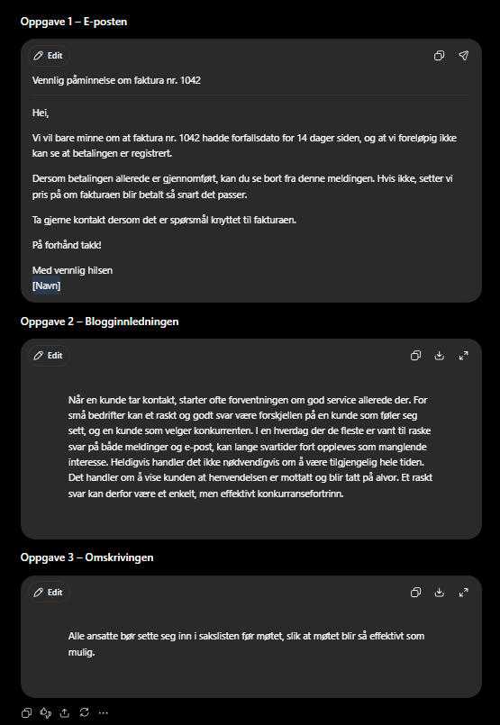
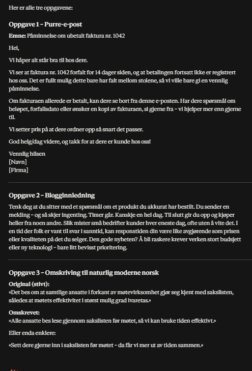
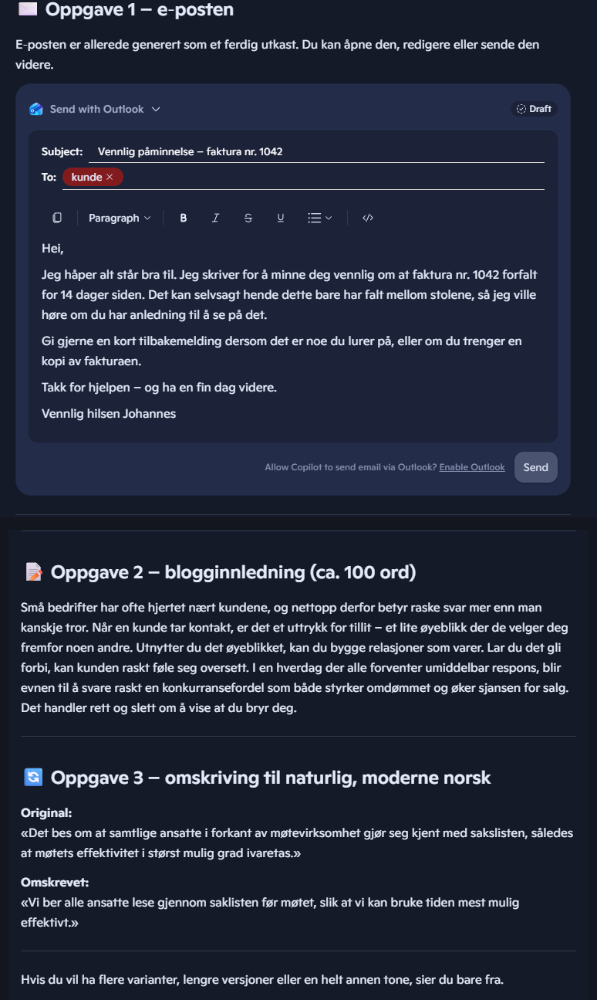
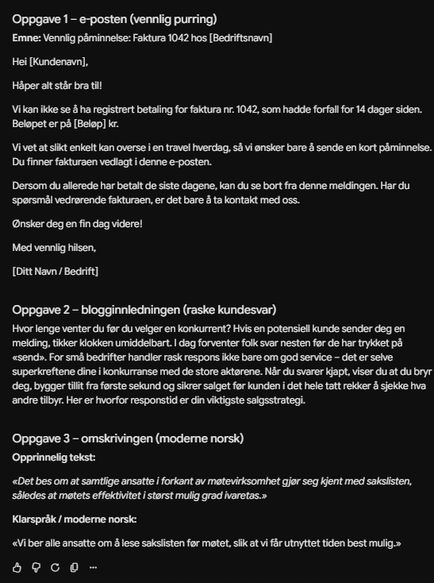

Beste KI-verktøy for å skrive norsk tekst (2026) – vi testet 4
De fleste KI-verktøy «støtter norsk». Men skriver de norsk et menneske faktisk ville sendt fra seg? Vi ga ChatGPT, Claude, Copilot og Gemini nøyaktig de samme tre oppgavene på bokmål – alle på gratisversjon, slik folk flest bruker dem. Alle fire leverte brukbart. Ingen leverte feilfritt.
Slik testet vi
Hvert verktøy fikk tre identiske oppgaver: skrive en vennlig purring på en forfalt faktura, skrive innledningen til et blogginnlegg om rask kundeservice, og skrive om et stivt, byråkratisk avsnitt til naturlig, moderne norsk. Vi brukte gratisversjonene i standardmodus (uten «tenkemodus»), fordi det er slik de aller fleste møter verktøyene. Vi vurderte tre ting: er norsken idiomatisk eller «oversatt engelsk», hvor mye må rettes før teksten kan sendes, og hvor godt treffer tonen formålet. Testen ble gjennomført i august 2026.
Kort oppsummert
| Verktøy | Sterkest på | Svakest på | Dom |
|---|---|---|---|
| ChatGPT (gratis) | Stabilt, naturlig norsk i alle oppgaver | Én halvklønete fakturafrase | 5/6 – vinneren |
| Claude (gratis, Sonnet) | Beste prosa og riktigst tone for bedrift | Etterlot en uferdig «helg/dag»-formulering | 5/6 |
| Copilot (gratis) | Korrekt fakturanorsk + ferdig Outlook-utkast | Stive enkeltformuleringer, svakest blogginnledning | 4/6 |
| Gemini (gratis, Flash) | Mest komplett og praktisk levering | Testens eneste rene grammatikkfeil | 4/6 |
ChatGPT – vinneren, fordi den aldri bommet
ChatGPT glimret ikke mest i noen enkeltoppgave – den vant fordi den aldri leverte noe galt. Purringen traff den vanskelige balansen mellom vennlig og tydelig («Dersom betalingen allerede er gjennomført, kan du se bort fra denne meldingen»), blogginnledningen var rolig og voksen, og omskrivingen av kansellispråket var kort og presis: «Alle ansatte bør sette seg inn i sakslisten før møtet, slik at møtet blir så effektivt som mulig.»
Det nærmeste vi kom en feil: «fakturaen hadde forfallsdato for 14 dager siden» – et menneske ville skrevet «forfalt for 14 dager siden». Det er en flikk, ikke en feil. Av alle fire var dette teksten som krevde minst etterarbeid, og i praktisk bruk er det den egenskapen som teller mest.

Prøv ChatGPT her
Claude – best prosa, men krever korrekturlesing
Claude leverte testens beste enkelttekst: blogginnledningen. «Du sender en melding – og så skjer ingenting. Timer går.» Korte setninger, ekte rytme, et fortellergrep ingen av de andre var i nærheten av. Den var også alene om å tiltale kunden som «dere» i purringen – altså bedrift til bedrift, som strengt tatt er mest korrekt – og traff «forfalt for 14 dager siden» på første forsøk. I omskrivingsoppgaven leverte den uoppfordret to varianter, inkludert en muntlig.
Så hvorfor ikke førsteplass? Fordi den etterlot «God helg/dag videre» i en ellers ferdig e-post – den klarte ikke velge, og lot skråstreken stå. Sender du den e-posten uten å lese den, har kunden sett det før deg. Legg til «vi hjelper mer enn gjerne til» (som lukter engelsk «more than happy to»), og bildet er klart: høyest topper, men du må lese korrektur.

Prøv Claude her
Copilot – best fakturanorsk og smartest arbeidsflyt
Copilot overrasket på to måter. Den var eneste verktøy som skrev fakturasetningen slik en norsk regnskapsfører ville («faktura nr. 1042 forfalt for 14 dager siden» – på første forsøk, uten omveier). Og den leverte ikke bare tekst: purringen kom som ferdig Outlook-utkast med emnefelt og signatur, klar til å sendes. For den som lever i Microsoft-verdenen er det et reelt tidsbesparende poeng, ikke en gimmick.
Språklig er den mer ujevn. «Jeg skriver for å minne deg vennlig om» har stiv ordstilling, blogginnledningen åpnet i det blomstrete hjørnet («Små bedrifter har ofte hjertet nært kundene»), og den skriver konsekvent «jeg» der en bedrift oftere ville skrevet «vi». Omskrivingsoppgaven løste den derimot rent og godt.

Prøv Copilot her
Gemini – mest praktisk, men med testens eneste ekte feil
Gemini tenkte lengst på praktisk bruk: purringen kom komplett med emnefelt og utfyllingsfelt for kundenavn, beløp og bedriftsnavn – nærmest en gjenbrukbar mal. Omskrivingen var god og aktiv («slik at vi får utnyttet tiden best mulig»).
Men i en språktest er grammatikk kongen, og Gemini leverte testens eneste rene feil: «Vi vet at slikt enkelt kan overse i en travel hverdag» – det skal være «kan oversees» eller «er lett å overse». I tillegg var blogginnledningen den mest selgende av de fire, med formuleringer som «selve superkreftene dine i konkurransen» – energisk, men det glir over i oversatt reklameengelsk.

Prøv Gemini her
Konklusjon: dette ville vi valgt selv
Skal du ha ett verktøy til norsk brukstekst, velg ChatGPT – ikke fordi den er mest imponerende, men fordi den er den eneste som aldri leverte noe du ikke kunne sendt. Skriver du tekster der språket skal ha liv – blogg, nyhetsbrev, markedsføring – er Claude det sterkeste valget, med korrekturlesing som fast rutine. Og bor du i Outlook hele dagen, gjør Copilots integrasjon den vanskelig å slå i akkurat den jobben.
Den største lærdommen fra testen: alle fire skriver bedre norsk enn ryktet sitt, og alle fire gjør fortsatt feil et menneske ikke ville gjort. KI-en skriver utkastet – du er fortsatt redaktøren.
Ofte stilte spørsmål
Er gratisversjonene gode nok?
Til vanlig brukstekst på norsk: ja. Hele denne testen er gjort på gratisversjoner, og alle fire leverte tekst som med små justeringer kunne vært sendt. Betalversjonene gir raskere svar, nyere modeller og høyere grenser – om de også skriver bedre norsk, tester vi i en egen artikkel.
Hva med nynorsk?
Ikke testet ennå – det fortjener en egen, grundig test, og den står på planen vår.
Sist testet: august 2026, alle verktøy på gratisversjon i standardmodus. Vi oppdaterer testen når verktøyene endrer seg vesentlig.
Les også: Transkribering på norsk: vi testet 4 verktøy · Hva koster KI-verktøyene i Norge?